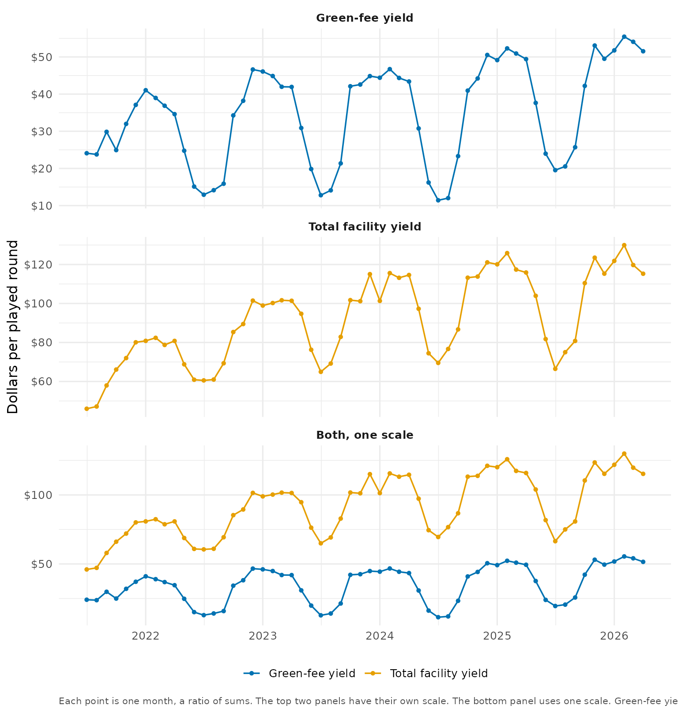
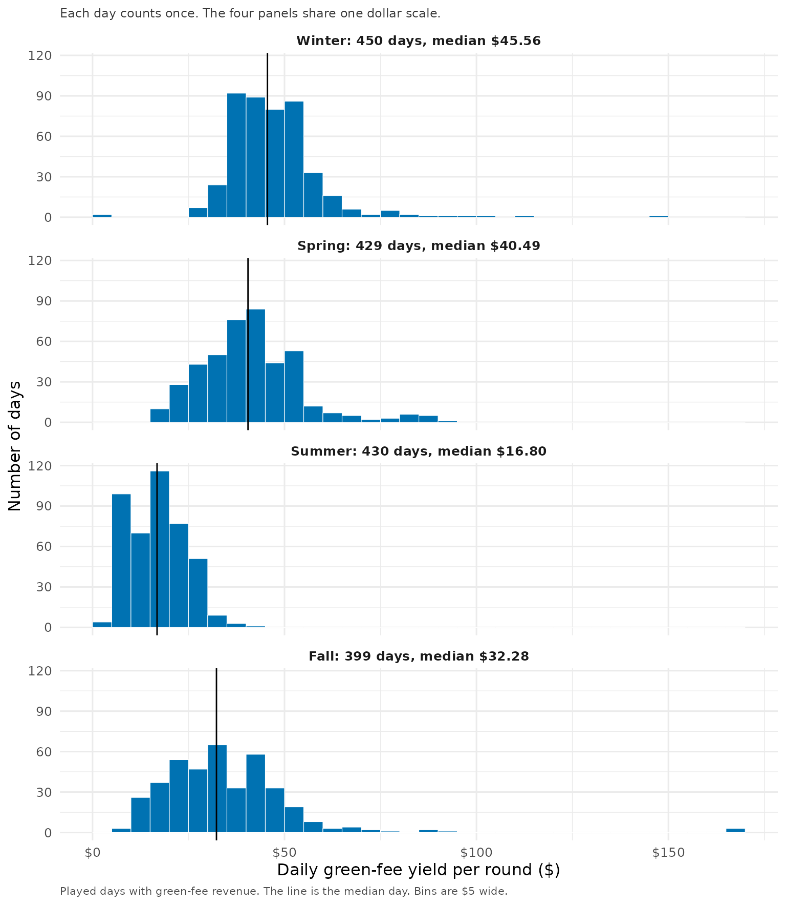
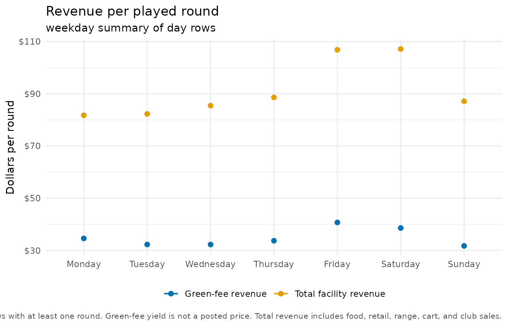

library(golfops)
sample <- dobson_operating_daily()
open <- sample[sample$rounds_played > 0, ]
prices <- revenue_per_golfer(sample)
weekday <- summarize_golf_rounds(open, by = "weekday", duplicates = "drop_extra")
dollars <- function(x) paste0("$", formatC(x, format = "f", digits = 2))
yield_of <- function(day, column) {
weekday[[column]][as.character(weekday$period) == day]
}Yield per round is recorded revenue divided by rounds played, on days with at least one round. In this file a round is one golfer who played. The denominator is those golfers. It is not an open tee time, and it does not include someone who only used the range.
Two numerators are easy to mix up.
- Green-fee yield is
green_fee_revenue / rounds_played. The numerator is the city field Green Fees, the fees actually collected. It is not the price on a rate card. - Total facility yield is
total_revenue / rounds_played. The numerator is the city field Total Revenue: cart, club rental, merchandise, green fees, range, and food and beverage. Where both fields are present, this matches the city’s Revenue/Round within one cent.
Yield is not demand, and it is not a price elasticity. Demand here is rounds played. Elasticity would be how rounds change when a price changes. This file has no posted price and no record of a price change. Yield can move because the mix of golfers changed, a discount changed, the season changed, or cart, food, range, merchandise, or club dollars changed. A higher yield does not show that a price change caused more revenue.
The year’s revenue, before dividing by golfers, is in Revenue and golfers. RevPATR, on that page, divides by the daylight estimate of rounds the course could have sold.
Monthly yield
Each point is one month. The value is a ratio of sums, not the average of the daily yields. Partial 2021 starts in July, and partial 2026 ends in April. Those months are in the chart and should not be read as full years.
month_yield <- summarize_golf_rounds(open, by = "year_month", duplicates = "drop_extra")
month_long <- rbind(
data.frame(
period = month_yield$period,
series = "Green-fee yield",
value = month_yield$green_fee_per_played_round
),
data.frame(
period = month_yield$period,
series = "Total facility yield",
value = month_yield$total_revenue_per_played_round
)
)
month_long$series <- factor(
month_long$series,
levels = c("Green-fee yield", "Total facility yield")
)
own_scale <- month_long
own_scale$panel <- as.character(own_scale$series)
shared_scale <- month_long
shared_scale$panel <- "Both, one scale"
month_plot <- rbind(own_scale, shared_scale)
month_plot$panel <- factor(
month_plot$panel,
levels = c("Green-fee yield", "Total facility yield", "Both, one scale")
)
ggplot2::ggplot(
month_plot,
ggplot2::aes(x = .data$period, y = .data$value, color = .data$series)
) +
ggplot2::geom_line(linewidth = 0.6) +
ggplot2::geom_point(size = 1.1) +
ggplot2::facet_wrap(~ panel, ncol = 1, scales = "free_y") +
ggplot2::scale_y_continuous(labels = scales::label_dollar()) +
ggplot2::scale_color_manual(values = c(
"Green-fee yield" = "#0072B2",
"Total facility yield" = "#E69F00"
)) +
ggplot2::labs(
x = NULL,
y = "Dollars per played round",
color = NULL,
caption = "Each point is one month, a ratio of sums. The top two panels have their own scale. The bottom panel uses one scale. Green-fee yield is not a posted price."
) +
ggplot2::theme_minimal(base_size = 12) +
ggplot2::theme(
legend.position = "bottom",
plot.background = ggplot2::element_rect(fill = "white", colour = NA),
plot.caption = ggplot2::element_text(size = 8, hjust = 0, colour = "grey30"),
strip.text = ggplot2::element_text(face = "bold")
)
The top panel is green-fee yield and the middle panel is total facility yield, each on its own scale. The bottom panel puts the same two lines on one scale. The lines repeat a high winter and a low summer, and the level is not the same in every year. They move together because green fees are inside total revenue. The gap between them is cart, food and beverage, range, merchandise, and club rental. A month when that gap narrows can be a change in those other categories, not a change in the green fee.
Daily green-fee yield
The monthly point is a ratio of sums, so a busy day moves it more than a quiet one. The histogram gives every played day one observation, however many rounds were played. It is not a histogram of the price paid by each golfer. Zero-round days are excluded, and so is any played day with missing green-fee revenue. In this extract that second exclusion removes no rows.
The four seasons are stacked on one dollar scale. Winter and summer barely overlap. Spring sits near winter, and fall sits between them, with a thin right tail. Bins are five dollars wide. The line in each panel is the median day.

Of the 1,708 played days, the median day is $35.92. That is the middle day, not the ratio of all green fees to all rounds. Winter’s median day is $45.56 (450 days). Summer’s is $16.80 (430 days). No summer day reaches the winter median. Spring’s median day is $40.49, and fall’s is $32.28.
The right tail is thin. Six days exceed $100. The three highest are 2025-11-08 at $170.00 (100 rounds), 2025-11-07 at $168.55 (101 rounds), and 2024-10-26 at $165.46 (104 rounds). All three are fall days, in the right tail of that panel. The lowest day is 2023-07-11, a summer day at $2.11 on 150 rounds. These rows are worth inspecting in the source file. They are not, by themselves, a posted rate.
The monthly chart and this histogram describe the same seasonal gap in two ways. The line follows the ratio of sums from month to month, including the change across years. The histogram shows that a typical winter day and a typical summer day already sit far apart. Rate fences describes a September 2026 course guide in which season, day, and tee-time window are different planning examples, and in which a live quote can still move. That guide is later than this extract. The spread here could reflect a price structure, a demand-responsive quote, the mix of golfers, or something else in the day’s green fees. The shape of the histogram is not evidence for any one of those.
Weekday yield
The same ratio, pooled across every played day of the week. This is not a daily time series. Friday’s green-fee yield is $40.69 and Sunday’s is $31.72. Total facility yield is $106.87 on Friday and $87.14 on Sunday.
plot_revenue(weekday) +
ggplot2::theme(
plot.background = ggplot2::element_rect(fill = "white", colour = NA),
plot.margin = ggplot2::margin(6, 12, 8, 6)
)
#> `geom_line()`: Each group consists of only one observation.
#> ℹ Do you need to adjust the group aesthetic?
Sunday is the fullest weekday in Capacity and utilization, and its green-fee yield is lower than Friday’s. That can be a different mix of golfers, a different set of rates, or both. The file has no rate code, so the chart does not identify a weekend premium. The line connects the seven weekdays so the contrast is easy to see. It is not a sequence of dates.
By category and year
The monthly and weekday charts use two numerators. The table and the stacks split total facility yield into the six city categories. Each cell is that category’s dollars divided by golfers who played. Green fees and cart rentals are the closest of these figures to an amount paid. One day still mixes 9-hole and 18-hole play, weekday and weekend, and any discounted rate. Food and beverage is spending recorded per golfer. Dining is not split from alcohol. Range, merchandise, and club rental are facility dollars spread across every golfer, including golfers who bought none of them. A blank category is left out of the numerator, and those golfers stay in the denominator.
| 2021* | 2022 | 2023 | 2024 | 2025 | 2026* | |
|---|---|---|---|---|---|---|
| Total revenue | 61.05 | 76.12 | 92.08 | 99.41 | 101.99 | 121.33 |
| Green fees | 28.63 | 29.43 | 33.31 | 33.74 | 38.94 | 53.18 |
| Food and beverage | 14.71 | 17.25 | 21.74 | 22.44 | 26.73 | 29.22 |
| Merchandise | 4.10 | 4.65 | 5.86 | 5.80 | 4.25 | 5.26 |
| Range | 7.72 | 11.63 | 18.17 | 24.13 | 27.13 | 28.73 |
| Cart | 5.56 | 12.74 | 12.50 | 12.77 | 4.41 | 4.09 |
| Club rental | 0.33 | 0.41 | 0.49 | 0.54 | 0.54 | 0.86 |
By type
The bar is dollars per golfer. Each segment is one category. Total revenue is the sum of the six and is left off the stack.
plot_revenue_mix(sample)
Through 2024 the bar grows, from about $76 per golfer in 2022 to about $99 in 2024. In 2025 the total barely moves, to about $102, because the cart segment falls from about $13 to about $4 while green fees, food and beverage, and range grow. The 2026 bar is taller because that year in the extract is only January through April, the expensive months.
Share of dollars per golfer
The same segments, scaled so each year is 100 percent. This is the share of dollars per golfer. The share of the year’s revenue is the chart titled “Share of annual revenue.”
plot_revenue_mix(sample, scale = "share")
Cart’s share of dollars per golfer drops in 2025 and stays small in early 2026. Green fees remain the largest slice. Range’s share grows from 2022 through 2024 and then levels off. The 2026 shares describe January through April only.
Days with no recorded play are left out of these yields because the denominator would be zero. The city file does not say those days were closures. Utilization on days with play is in Capacity and utilization.